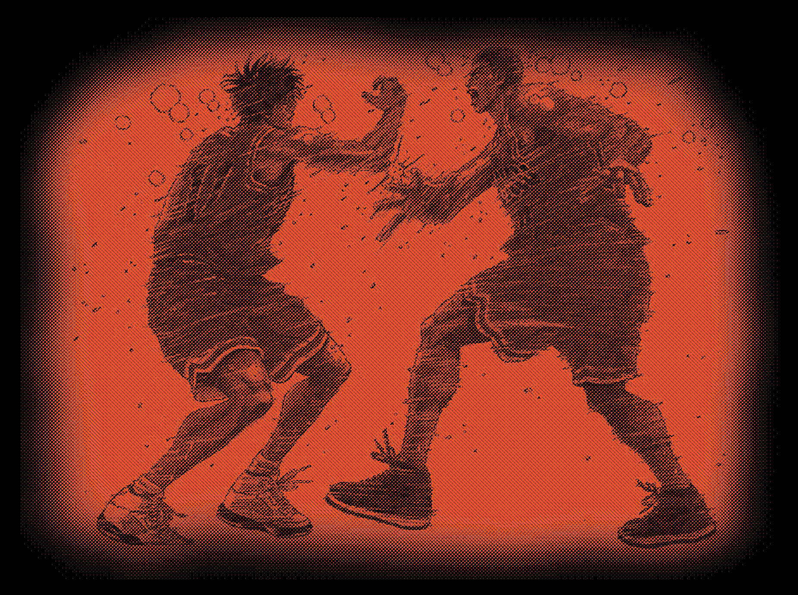

⟡ 농구.. 좋아 하시나요? ⟡
때는 바야흐로 2023년 1월 23일 겨울방학. 당시 친구, 동기들, 선배들 할 것 없이 인스타 스토리에
<더퍼스트 슬랭덩크> 후기가 마구마구 올라왔다. 서울에 오랜만에 혼자 올라와서
할 일도 없었던 나는 ‘아무것도 모르는 상태로’ 즉흥적으로 영화를 보기로 결정했다.
“슬램덩크? 그거 그냥 농구만화 아닌가..?” ↴

↳ …엔딩 크레딧이 올라온 뒤, 나는 눈물 범벅인 마스크와 함께 극장을 나오게 된다.
“내가 이런 명작을 몰랐다니 인생 헛 살았다.” 소리가 절로 나왔다.
:
:
그렇게 갑자기 나의 농.놀 인생이 시작되었다. (두둥
